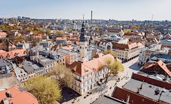
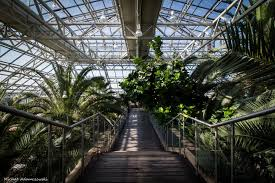
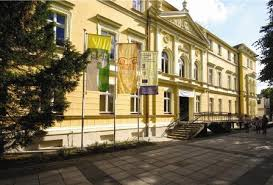
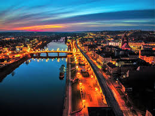
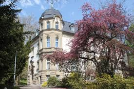
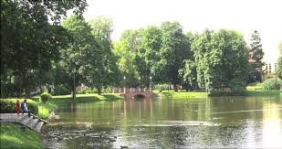
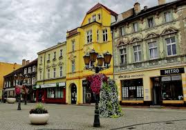
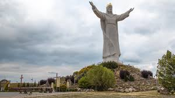
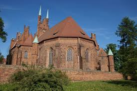

Lubuskie
Najważniejsze miasta
Zielona Góra
Zielona Góra to miasto w województwie lubuskim, znane z tradycji winiarskich oraz corocznych Winobrania, które przyciąga turystów z całej Polski. Warto zobaczyć Stare Miasto, Palmiarnię oraz górujący nad miastem Winny Gród, który jest symbolem regionu. Palmiarnia Zielonogórska
Jedno z najbardziej niezwykłych miejsc w mieście, oferujące egzotyczne rośliny, które przyciągają turystów przez cały rok. W palmiarni można podziwiać roślinność z tropików oraz odpocząć w wyjątkowej atmosferze.
Muzeum Ziemi Lubuskiej
Miejsce, które pozwala poznać historię regionu, od pradziejów po współczesność. W muzeum znajdują się wystawy archeologiczne, etnograficzne oraz sztuki współczesnej.
Gorzów Wielkopolskie
Gorzów Wielkopolski to jedno z większych miast województwa lubuskiego, którego centrum skupia się wokół katedry i malowniczych terenów nad Wartą. Miasto łączy tradycje przemysłowe z nowoczesnym rozwojem, oferując mieszkańcom i turystom wiele atrakcji kulturalnych oraz sportowych, w tym żużel. Muzeum Lubuskie
Miejsce, w którym można zobaczyć ciekawe zbiory dotyczące historii i kultury Gorzowa oraz regionu lubuskiego. Często organizowane są tu wystawy czasowe, koncerty i spotkania artystyczne.
Park Wiosny Ludów
Urokliwy park w centrum Gorzowa, idealny na spacery i relaks. Znajduje się tu wiele pomników, alejek i stawów, a wiosną park staje się prawdziwą oazą zieleni.
Świebodzin
Świebodzin to niewielkie miasto w województwie lubuskim, które słynie z imponującego Pomnika Jezusa Chrystusa, będącego jednym z najwyższych tego typu na świecie. Miasto ma również bogatą historię, z pięknymi zabytkami, takimi jak gotycka bazylika oraz malownicze tereny wokół jeziora. Pomnik Chrystusa Króla
Jeden z najwyższych pomników Jezusa Chrystusa na świecie, który stoi na wzgórzu z widokiem na miasto. Jest to obowiązkowy punkt dla turystów i wierzących, który przyciąga pielgrzymów z całej Polski.
Kościół św. Michała Archanioła
Gotycka świątynia z XIV wieku, która zachwyca swoją architekturą i pięknymi witrażami. To jedno z najstarszych miejsc kultu w regionie.